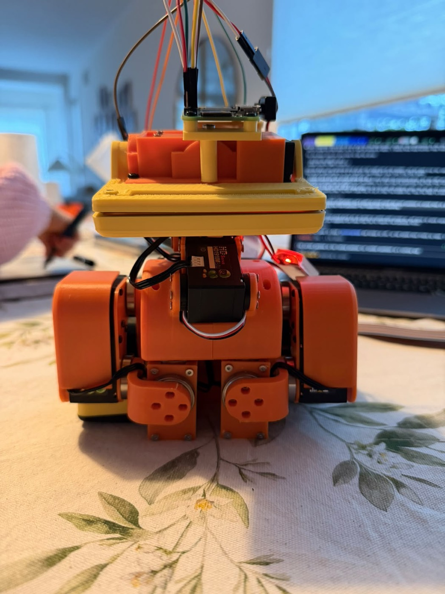
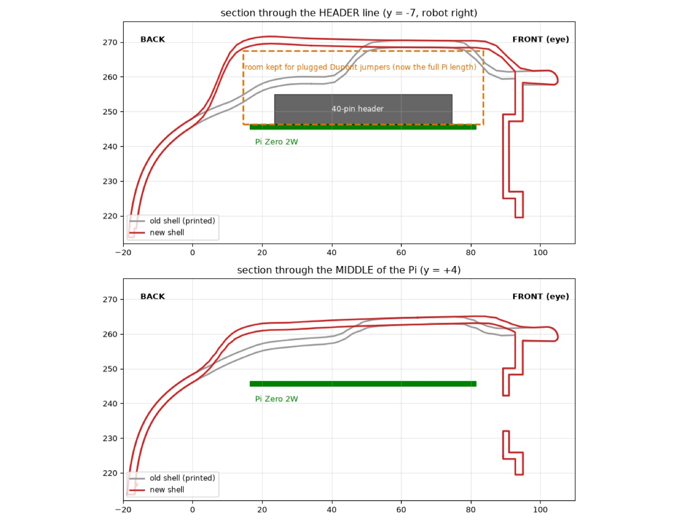
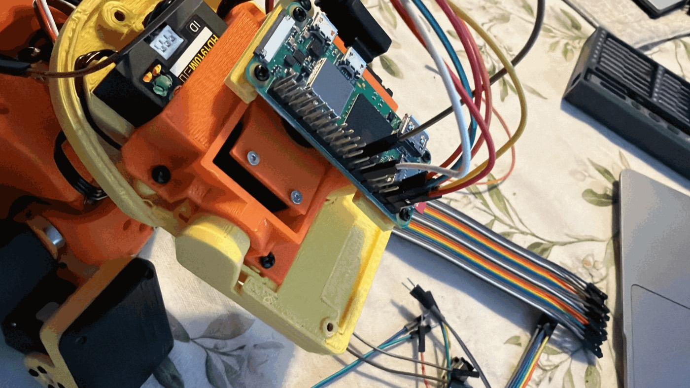
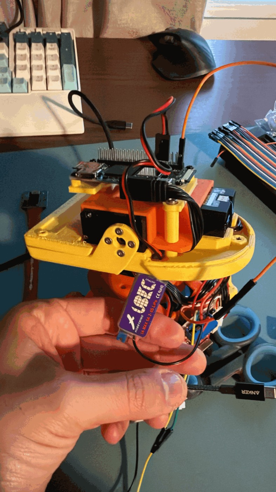
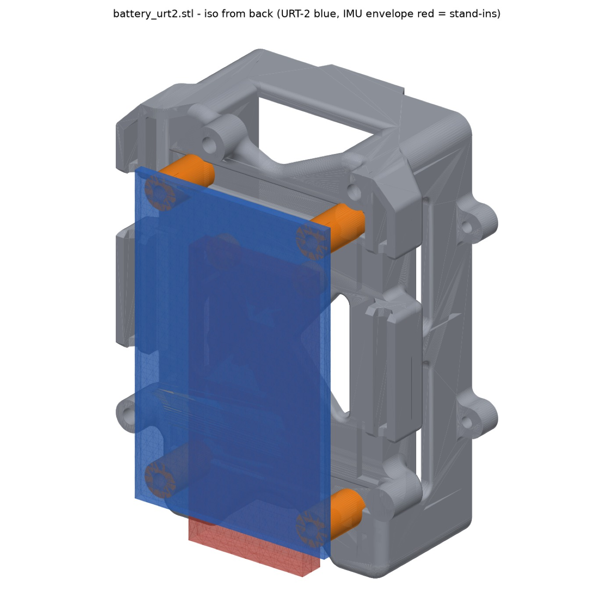
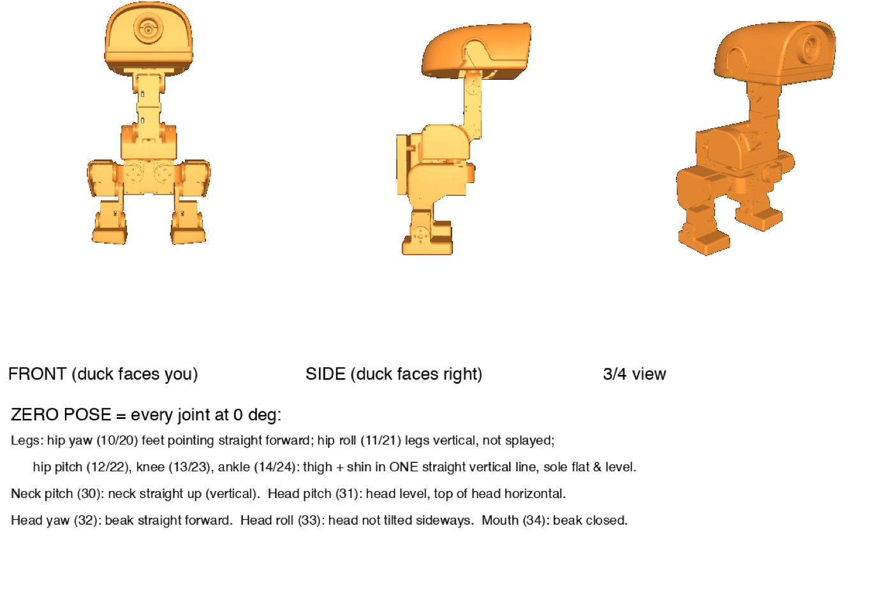

XGO-Duck is a small 3D-printed biped that learned to walk in simulation. The original runs on an Arduino UNO Q. I wanted to see whether a Raspberry Pi Zero 2 W, small enough to sit in the duck's head, could do the same job. This page follows the build from the first idea to the day all 15 servos answered on the bus, and then on to what doesn't work yet: walking, an Xbox controller, a camera, and a training run of our own. On the way there are parts that didn't fit and a calibration page that would have swung the neck servo through about 160°.
15Feetech servos on one bus
99.8 Hzservo feedback loop on the Pi
50 Hzneural-network policy
5.20 Vmeasured on the Pi's supply
The duck beside the text is the real CAD model from the training repository, with all 14 joints wired up. Drag it to rotate, scroll to zoom, and hover a part to see its servo ID. It acts out each chapter as you scroll, and in the test lab it replays real data from 18 November.
00Phase 0
The idea
Why a duckInspiration: Microduck and XGO-Duck
The build starts from a duck that already walks. Pollen Robotics built Microduck, a tiny bipedal duck whose walk is learned with reinforcement learning in MuJoCo and then copied onto real servos. Luwu Dynamics adapted it into XGO-Duck: a printable body, fifteen Feetech 1910 servos, an Arduino UNO Q and a custom expansion board. They publish the runtime and the training code, and the duck walks, gets up, picks things up with its beak and does a somersault ("roulade").
That left me with one question: can the same duck run on a Raspberry Pi? A Pi Zero 2 W is cheap and widely available. It has Wi-Fi and Bluetooth, and a camera port. If it can keep up with the 100 Hz servo loop, the duck gets a camera and a gamepad almost for free, and anyone with a Pi can build one.
On paper the goal is modest. The body, the trained policies and the web control page stay the same, and only the electronics and the low-level loop change. If that works, the extras can follow: a camera, an Xbox controller and training runs of our own. To see how much really changes, I first compared the two computers side by side.
Two computers versus oneWhat changes from the original
The UNO Q is really two computers on one board. A Qualcomm Linux processor runs the neural networks and the web page, and an STM32 microcontroller runs the hard real-time loop: reading 15 servos and the IMU 100 times a second. They talk over an internal serial bridge. On the Pi, one Linux computer does both jobs. Upstream's Linux code runs unchanged, and the microcontroller sketch is ported to a Python thread (mcu.py) that speaks the same binary messages, so the upstream code can't tell the difference.
Everything else that changes follows from that one swap, and the table lists it. The two rows to watch are where the computer sits and the camera, because both end up shaping the head.
XGO-Duck (original)
This build
Brain
Arduino UNO Q (Linux + STM32)
Raspberry Pi Zero 2 W, Debian 13, Python 3.13
Real-time loop
Zephyr sketch on the STM32
mcu.py, a Python port of the sketch
Servo interface
Luwu expansion board, Serial1 at 1 Mbps
Feetech FE-URT-2 over USB, 1 Mbps
IMU
QMI8658 on the expansion board
MPU6050 on I²C, address 0x69, axes configurable
Battery
18650 pack 8.4 V, more than 3500 mAh
AOLIKES 2S LiPo 2600 mAh + 5 V UBEC for the Pi
Where the computer sits
In the body
In the head, on a printed tray under a taller head shell
Camera
None
OV5647 CSI camera behind one eye (parts printed, not yet fitted)
Calibration
Web page, drives every servo to centre
Web page, plus a by-hand teach tool with torque off
Gamepad
Web joystick
Web joystick, Xbox controller over Bluetooth planned
A swap like this has many steps, and some of them can damage the robot if they happen in the wrong order. So the next step was to write the whole route down and put a check at the end of every stage.
Seven phases · five go/no-go gates · click any stepThe master plan
The project runs as a ladder of phases. Each phase ends at a gate, a measurable check that has to pass before the robot is allowed to move more. Green is done, orange is where we are now, blue is next, and dashed is later. Phase 5 can run alongside phase 4. Gate 4 decides the most: if the duck can't walk with the original policy, phase 6 retrains it for our heavier, Pi-headed duck.
donenownextlater◆ gate with its pass criterionif the gate fails
The plan says what happens when. The next diagram shows what is connected to what.
Click any block to jump thereThe whole system on one page
Red lines carry power, blue lines carry data, and dashed boxes are planned. Click a block to jump to its chapter. The first part of the map to become real was the body.
powerdataplanned
01Phase 1 · build
Printing, placing and wiring
Bambu printer · PLAPrinting the body
The body is printed from the upstream structure/ files in orange and yellow PLA, with TPU for the feet and beak. Before assembly, each of the 15 servos was given its own ID and centred: 10 to 14 for the left leg, 20 to 24 for the right, 30 to 33 for the neck and head, and 34 for the beak. By 3 November the mechanics were almost fully assembled.
Next to this text, the model is pulled apart along its joints. Each piece is one body in the simulation, and each joint between two bodies is one servo.
I only changed parts where the Pi forced it. Every new part is a drop-in replacement in the same coordinate frame as the original, and all of them are listed in PRINT_LIST.md. The first of those parts came from a plain problem: the Pi had no obvious place to live.

The duck sitting on the table. The yellow head plate carries the Pi Zero 2 W, and the head shell isn't on yet.
Placement studyWhere does a Pi fit in a duck?
A Pi Zero is small, but the duck is crowded. Before printing anything we modelled three places for it against the moving legs and neck. As a backpack, it needs room at the sides that the body doesn't have: the legs sit right beside the battery box, and the backpack ends up 78 mm wide. Stacked on the back, it makes the body 53 mm deep, which breaks the get-up motion. In the head there is the most free volume, and the camera can sit right behind the eye. The head won.
The three placements we compared. The leg sweeps made the decision.
The head needed a new set of parts: a Pi tray on two spacers, a camera mount, a taller shell and an eye with a lens hole. The tray first hung on M2 screws in thin plastic, which was too weak, so on 7 November the anchors changed to M3 × 30.
The first test print of the shell, on 8 November, showed a problem the model hadn't caught. The Pi with its plugged-in jumper wires didn't fit under it, because the plugs stick up above the header. I raised the ridge over the whole length of the Pi, up to 16.5 mm, to leave room for the Dupont plugs.
Head v2, exploded: shell, Pi on its tray, spacers, support plate with servos, and the camera at the front.

Old shell (grey) against new shell (red). The orange box is the room kept for the jumper plugs.

The Pi on its tray in the head, with the IMU wires on the header.
With the Pi in the head, it needed a clean 5 V from somewhere, and that is a question about the battery.
7.4 V and 5 VPower: one battery, two voltages
The servos run directly on the 2S LiPo battery, which gives 7.4 V and up to 8.4 V when full. The Pi needs a clean 5 V. I started with a PiSugar 3 battery board and then removed it, because a second battery and board to charge, manage and fit in the head made things worse. One battery is simpler and lighter. A small switching regulator, a UBEC (universal battery eliminator circuit), now makes the 5 V from the same battery.
The battery's XH plug and the UBEC's input both go into the URT-2's blue screw terminal, at V1 and G. The XH plug doubles as the on/off switch. The battery only charges off the robot, with the HelpersLab 8.4 V 2 A charger.
The UBEC's output ends in a 3-slot plug with a red wire, a black wire and one empty slot. Pushing that plug straight onto the Pi's header is the one thing to avoid, because the black wire could land on a 5 V pin and short it. So two jumper wires carry the power: red to Pi pin 4 (5 V) and black to pin 14 (GND). A blue jumper on the UBEC selects 5 V or 6 V.
The first reading I wanted was the voltage. The meter showed 5.20 V before I connected anything. The Pi booted on it, and on battery it reported throttled=0x0, which means no undervoltage.

The UBEC. It's listed as ZHITING on Amazon, but the board says Hobbywing. Same part.The 3-slot output plug: red and black, one slot empty. This is why it goes on through two jumpers.
Power was settled. What remained in this phase was the data side: 15 servos, one IMU and a single cable to the Pi.
Servo bus · I²C · USBCabling the duck
All 15 servos share one serial bus. Every servo listens on the same three wires (signal, power, ground) and answers only to its own ID. The FE-URT-2 adapter turns that bus into USB for the Pi. It only has two servo sockets, so the chains are split. Port 1 carries both legs, IDs 10 to 14 and 20 to 24, joined with a Y splice. Port 2 carries the neck chain, IDs 30 to 34, on a cut Waveshare 5264 cable.
That split took two tries. The Y splices were first planned with Wago 221 lever clamps, but three of them were too bulky and only two fit in the body. I switched to solder-seal sleeves: a sleeve shrinks over the joint and the solder ring inside melts with a heat gun. The cable was a second surprise. The servos use JST PH 2.0 plugs, but the URT-2 sockets measured 2.5 mm pitch, which is Molex 5264, so a PH 2.0 plug would not go in.
The MPU6050 IMU sits on the Pi's header at pins 1 (3.3 V), 3 (SDA), 5 (SCL), 6 (GND) and 17 (3.3 V to AD0, which sets address 0x69). It will sit flat on the reprinted battery box. The URT-2 connects to the Pi's middle "USB" port with a USB cable. Four UART wires on pins 8 and 10 were the alternative, and I kept USB. That choice turns out to matter for Bluetooth, which comes back in the Xbox controller chapter.
On 17 November the neck chain and both leg splices were soldered, and a scan from the Mac found all 15 IDs on the bus. All 15 servos answered through the new wiring.

Reprinted battery box: four posts for the URT-2 (blue) and two for the MPU6050 (red, underneath). It's ready to print.
A bus full of servos that answer is still not a robot that knows which way is straight. That part is software and calibration.
02Phase 2 · calibrate
Software, calibration and tests
Two loopsHow the software thinks
Two loops run on the Pi. The fast loop (100 Hz) reads every servo and the IMU, enforces the safety rules and sends goal positions. The slow loop (50 Hz) builds a 61-number picture of the robot and asks a small neural network what each joint should do next.
Everything runs as a systemd service (xgo-duck) that starts at boot, with the web page on port 9527. The robot always boots disarmed with torque off. The Mac side has a setup wizard, a servo bus tool, an IMU checker and a deploy script, and 48 tests run the real upstream controller and policies against simulated servos. With all 15 servos on the bus, the Pi measured 99.8 Hz feedback, a steady 50 Hz policy and about zero overruns.
Both loops depend on numbers they cannot check for themselves. The most important of those is what 0° means for each joint.
What does 0° mean?Calibration: three poses to know
A servo only reports a raw number from 0 to 4095 for one full turn. Calibration records, for each joint, the raw number at which the joint is at 0° in the simulation. Three poses matter, and you can show each of them on the duck:
The zero pose is the one I teach: legs straight down, feet flat, neck vertical, head level, beak closed. Every angle is measured from it. The home pose is the crouch the robot stands in: hips and ankles ±23°, knees 0°, hip roll ±5°, neck and head pitch 20°. The software works it out from the zero pose. The sit pose is the resting pose on the table. It is a safe place to start torque, but it can't be the zero, because the network would then think folded legs are straight.
Getting the zero pose into the duck went wrong first. The first calibration attempt saved nothing: the Finish step was never registered, so there was no zero_pos.json. Then came the trap. The upstream calibration page switches torque on when you enter it and drives all 15 servos to raw 2047 at once. Our neck servo 30 sat at raw 276, so it would have swung about 160°.
So we wrote teach_zero.py instead. With torque off, I hold the duck in the zero pose by hand and press Enter. The tool averages the encoders for 1.5 seconds, warns about anything that moved or sits near the 0/4095 wrap point, saves zero_pos.json on the Pi and checks that the service loaded it. The warning matters because servo 22 had read raw 66 on the first scan, right next to that wrap. Its taught zero is 2358, well away from it.

The zero pose reference, from the simulation model (qpos = 0).
Saved zeros, IDs 10 to 34: 1782 1977 1801 2247 1776 · 2689 2200 2358 1508 1482 · 1417 2008 1028 3219 1500. The lowest is 1028 and the highest 3219, so none is near the wrap point.
Fifteen numbers in a file prove nothing yet. The next step is to ask the servos to go there, carefully.
Replay of 18 NovemberThe test lab
Every first test is built to fail safely. Each button below replays a real run from 18 November on the 3D duck, with the actual terminal output. Angles come from the real raw readings and the saved zeros: angle = −(raw − zero) × 360 / 4095.
Pick a test. The duck replays it on the bench.
The tests run in order of risk. Test A, the hold, sets each servo's goal to where it already is and only then enables torque, so nothing can jump. It proves that torque works without a jump, and all 15 servos held at 0 counts off.
Test B moves each joint 4° and back, in ID order. It shows that every servo answers, that the IDs match the right joints, and which way each one turns. All of them came back within about 1°.
Tests C and D are the zero ramps. They slowly drive the legs to where the software thinks "straight" is, at soft stiffness (KP 4), with the duck held in the air. If the legs look straight, the calibration is right. Hips and knees got within about 1° of their targets.
Test E turned up the one stubborn joint. Servo 24, the right ankle, stalled every time: 9° short at KP 4 and 3° short at KP 8. The foot moves freely by hand, so the friction is inside the servo. It may get a little more stiffness later.
One question is still open, and it decides whether the calibration is final. When the duck was hand-held, the hips read about 24° on both sides, and I have not yet confirmed that the legs looked straight during test F. If the eye agrees with the numbers in test F, the zeros are final. If not, I teach them again, this time with torque holding the pose. That check is the first rung of the validation ladder, which is where the next phase begins.
03Phase 3 · after calibration
The validation ladder
Once the zeros are taught, it's tempting to press "walk". Twelve rungs stand in between, and each one removes a way the first walk could go wrong. Every rung says why it exists, how to do it, and how I will know it passed. Most take minutes. The order matters: a wrong joint direction or a sideways IMU makes the trained network fight the robot, and that ends in a fall that looks like a "bad policy".
gate 2
A · Finish the calibration
The first four rungs finish the calibration. They start with the open question about the hips, then cover the neck and head, check that every joint turns the way the model expects, and end by backing up the result.
1
Confirm the leg zeros by eye
open10 min
WhyThe policy was trained to tolerate only ±0.015 rad (±0.86°) of encoder offset per joint. Today's hand-held check read the hips at about 24°. Either the hands bent the legs, or the zeros are off by that much.
HowHold the duck in the air and run bus_check.py zero --hold 15, then look from the side and photograph it. Replay F in the test lab shows what the software thinks "straight" looks like.
Pass whenHip, knee and ankle sit in one vertical line, feet are flat and the legs are parallel. The joints read within 1° of zero.
If it failsTeach again with torque helping: a teach_zero.py --assist mode (to build) holds the current zeros at KP 4 while you nudge each joint, then records.
2
Neck, head and beak zeros (30 to 34)
next15 min
WhyNeck and head make up a third of the mass. A neck zero that's off tilts the whole centre of mass, and the policy reads the head channels relative to these zeros.
HowDuck upright with the head supported. Run bus_check.py zero 30 31 32 33 --frac 0.5, then the full run. Check that the beak (34) closes at 0° and opens to 30° in the web page once armed.
Pass whenThe neck is vertical, the head is level and facing forward, and the beak is closed. Each joint is within 1°.
If it failsRe-teach only those IDs. teach_zero.py writes all 15, so run it with the legs already in their correct zero pose.
3
Joint directions match the model
next20 min
WhyA mirrored joint is the classic sim-to-real killer. The network pushes the knee "forward" and the real knee goes back. The port assumes the same sign (−1) for every servo, like the original firmware.
HowFrom the home pose, move each joint +10° and compare with this page. Test B in the lab with "exaggerate ×4" turned on shows the direction the model expects for each ID.
Pass whenAll 14 joints turn the same way as the 3D duck.
If it failsFlip that ID's entry in MOTOR_SIGN in mcu.py, then teach the zeros again.
4
Back up the calibration
next1 min
WhyThe first calibration was lost. The SD card lives in the head and is easy to reflash by mistake.
HowRun pi_runtime/backup_calibration.sh on the Mac. It copies zero_pos.json into the repo, so it ends up in git.
Pass whenA dated copy is in git.
If it failsCopy it by hand with scp.
gate 3
B · Harden the hardware
With the zeros settled, the next five rungs harden the hardware. Rung 5 deploys the safety update of 11 November, which never reached the Pi. Rung 6 mounts the loose IMU. Rungs 7 and 8 measure timing and power under load, and rung 9 builds the recorder that every later decision depends on.
5
Deploy the safety update
next5 min
WhyThe 11 November changes never reached the Pi: the low-battery cutoff, battery and temperature readout, IMU dropout recovery, and zeros that survive with the adapter closed.
Pass whenbus_voltage reads 7.4 to 8.4 V, all 15 servo_temps look plausible, and arming is refused below 6.6 V for 3 s.
If it failsThe register addresses come from the Feetech SDK. Read 0x3E/0x3F on one servo with bus_check.py and compare.
6
Mount the IMU, find its axes and bias
nextprint + 30 min
WhyThe policy steers by the gravity direction and the body's rotation speed. It was trained with up to 6° of mounting error and ±0.03 rad/s of gyro noise. Our MPU6050 showed about 2.4°/s (0.042 rad/s) of bias at rest, which is more than that noise.
HowPrint battery_urt2.stl and mount the MPU6050 flat (M2.5 × 4, pins down). Run imu_check.py upright and then nose-down to get the axes for config.toml. Then imu_check.py --bias --write.
Pass whenThe gravity vector in /api/status is right within 2° in six poses (upright, nose down, nose up, both sides, on its back), and the gyro reads under 0.01 rad/s at rest.
If it failsCheck the address (0x69, AD0 on pin 17) and the wiring. Re-run the two-pose check. A systematic tilt goes into IMU_BIAS_DEG.
7
Timing budget under load
next15 min
WhyAt 50 Hz the network has 20 ms per step. Today's run on the Pi measured an inference p99 of 16.7 ms and a worst case of 22.4 ms, which is tight. Training only allows 0 to 1 step of sensor delay.
HowLeave the policy running in shadow mode (torque off) for 10 minutes with the Pi in the head, and read feedback_hz, loop_missed and inference_ms. Stop the pichat service while walking, and set the CPU governor to performance.
Pass whenFeedback ≥ 98 Hz, policy steady at 50 Hz, inference p99 under 15 ms, and no overruns.
If it failsTrim background services, pin the loop thread to its own core, or retrain with an action delay (phase 6).
8
Power budget under load
next10 min
WhyFifteen servos holding a crouch draw much more current than a sitting duck. A voltage dip resets the IMU or browns out the Pi.
HowHold the home pose for 5 minutes, supported. Watch vcgencmd get_throttled, the battery voltage, the servo temperatures, and how warm the UBEC gets.
Pass whenThrottled stays 0x0, the voltage drops less than 0.4 V, no servo is above 55 °C, and the UBEC is only warm.
If it failsUse thicker battery leads, fit a capacitor at the URT-2 terminal, and lower holding stiffness when idle.
9
Telemetry recorder
to build1 h
WhyEvery later decision (is the policy failing? is the model wrong?) needs a recording to compare with the simulation.
HowA small tool that records /api/status at 50 Hz to CSV: targets against actual angles, gyro, gravity, voltage, temperatures and commands. The test-lab replays here already use the same format.
Pass whenA 1-minute recording replays on this page's 3D duck.
If it failsIf 50 Hz over HTTP is too slow, record on the Pi itself and copy the file over.
gate 4
C · First motion with the original policy
The last three rungs are the first time the original policy drives the duck. They start with the default pose in the air, continue with the walking ladder, and end with the violent motions. The head is about 23 g heavier than the one the walk was trained on, so I expect the duck to tip forward. Rung 11 tries simple fixes before any retraining.
10
Default pose: in the air, then on the table
next15 min
WhyThis is the first time the software, not our test tool, drives all 15 servos. The button sends the home pose directly, with no ramp.
HowHead sliders back to 0. Hand-pose the duck close to the home pose (hips and ankles ±23°, neck 20°), hold it in the air, press "Default pose". Then set it down on a soft mat with your hands around it.
Pass whenNo jump bigger than a few degrees, and it stands 30 s on its own with servos under 55 °C.
If it failsGo back to rungs 1 and 3. A lean usually means a zero or the IMU. A twitch usually means stiffness or delay.
11
Walking ladder
later1 h
WhyThe walk policy was trained for 0.4 m/s forward, 0.3 sideways and 1.0 rad/s turning. Our head is about 23 g heavier, so we expect it to tip forward.
HowWalk at 0.1 m/s for 1 m, then 0.2, then turns at ±0.5 rad/s, then sideways, then 0.4. Record every run (rung 9). Keep a hand or a loose string near it.
Pass whenTwo minutes of mixed commands without a fall, with tracking error under about 30 %.
If it failsFirst try simple fixes: a small head-pitch command back, or an IMU pitch offset. If it still falls, move on to phase 6 (retraining).
12
Get-up, pick, roulade
later1 h
WhyThese are the most violent motions. Get-up and roulade throw the head mass around.
HowGet-up from lying on its back, on a soft mat, then pick with the beak, then roulade last. Watch the head shell screws and the jumper wires in the head.
Pass whenThree get-ups in a row work, and nothing comes loose.
If it failsThe standup and roulade tasks exist in the training code. Retrain them with our head (phase 6).
phase 5
Driving it with an Xbox controller
If the walk works, I want to drive the duck with a gamepad. Microduck builders already do. The Pi Zero 2 W has Bluetooth on board, so an Xbox Wireless Controller can pair directly with the duck. Try the pad below (or W/A/S/D): it steers the duck on the bench the way the sticks will.
+0.00 vx · forward, limit ±0.4 m/s+0.00 vy · sideways, limit ±0.3+0.00 ωz · turn, limit ±1.0 rad/sDead zone 0.1, like the web joystick.
ControllerAn Xbox Wireless Controller with Bluetooth (the newer ones also speak Bluetooth LE). Update its firmware on a PC or console first.
PairOn the Pi: bluetoothctl → scan on → pair / trust / connect with the controller's address. Check that it shows up as an input device with evtest.
Keep Bluetooth onThis is where the USB choice from the wiring chapter pays off. A UART link to the URT-2 would have needed dtoverlay=disable-bt, which turns Bluetooth off. With the URT-2 on USB, Bluetooth stays free.
Gamepad serviceA small Python service (evdev) next to the robot software sends the same /api/mode and /api/command requests as the web page, 20 times a second. That way all the existing safety rules apply.
MappingLeft stick: forward and sideways speed. Right stick: turning. Bumpers move the head, right trigger opens the beak. A: get-up, B: pick, X: roulade. Hold Start for 1 s to arm, Back disarms.
SafetyIf the controller disconnects, commands stop. The 250 ms timeout then disarms the duck on its own. Arming needs a deliberate 1 s hold.
TestFirst with torque off (watch the command values in /api/status), then in the air, then on the floor at reduced speed limits.
A controller tells the duck what to do. The camera would let it see.
phase 5
Giving the duck an eye
The last piece of hardware is an eye. A DAOKAI OV5647 camera module (25 × 24 × 9 mm, 72° lens, €9.24) goes behind the right eye on a printed mount, and its ribbon runs over the Pi to the 22-pin camera connector. I returned the USB camera I tried first, because it was too big for the head and would have taken the Pi's only data port. The simulation model already has a head_camera point in the same place, so a camera-based skill can be trained later.
Fit and detectPrint camera_mount, eye_cam and eye_shell_v2. Connect the ribbon with the contacts the right way round, then run rpicam-hello --list-cameras.
RotateThe camera is mounted upside down, so flip both directions in software (a 180° transform in Picamera2).
Live viewMJPEG at 640 × 480, 15 fps, shown in the web page. Measure CPU use against rung 7's timing budget, because the policy has to stay at 50 Hz.
Look at meFace detection on a small image (320 × 240, about 5 fps) turns the face position into the four head commands. The walking policy already knows how to move the head while it balances, so no retraining is needed.
Follow meFace size and position become forward speed and turning. Again no retraining is needed, only commands.
Learned visionLater: train skills that use the camera in simulation (phase 7).
The controller and the camera both feed a network that I did not train. The next section explains where that network comes from and what it would take to train one for this duck.
04Phase 6 and 7 of the plan · deep dive
Reinforcement learning, step by step
The big pictureFrom simulation to servos
Everything the duck does when it moves comes from a small neural network, so it helps to know where that network comes from. Its skills are trained by trial and error in a physics simulator. Thousands of virtual ducks try to walk at once. Every step they get points for following the joystick command and for staying upright, and lose points for slipping, jerking and falling. The training algorithm (PPO) slowly shifts the network towards whatever earned more points. The result is an ONNX file of a few hundred kilobytes that the Pi runs 50 times a second.
The loop in the diagram closes along the bottom. Recordings from the real duck are meant to correct the model for the next run, and that recorder is rung 9 on the ladder.
Inputs and outputsWhat the network sees and does
Fifty times a second the network gets 61 numbers and returns 14. The outputs are joint angles relative to the home pose, in radians. The fast loop turns them into servo goals, and each servo's own controller (KP 6) does the rest.
The 61 inputs fall into six groups, and several of them tie back to earlier chapters. Gyro and gravity (6 numbers) come from the IMU, which is why rung 6 matters. Joint angles and speeds (28) are relative to the home pose, which is why the zeros matter. The last action (14) lets the network move smoothly, and the output is also smoothed (α 0.45). The twist (3) is the joystick or Xbox command: forward, sideways, turn. The head (4) holds the neck pitch, head pitch, head yaw and head roll targets, and it is the hook for the camera. The last six are padding values. They are zeros in walking, a phase clock for pick, and the roll angle for the roulade "Angle" variant.
From the training codeHow the walk was trained
The walk was trained with 4096 ducks simulated in parallel, which gives 98,304 samples per update (24 steps × 4096), for at most 50,000 PPO iterations. The policy rate is 50 Hz, the same as on the Pi. The discount γ is 0.99, GAE λ is 0.95, the learning rate is 1e-3, the clip is 0.2 and the entropy coefficient is 0.01.
What the duck is paid for matters just as much as the volume. These are the reward weights in the walking task. Positive terms are what the duck should do, and negative terms are what it should avoid. Foot clearance and swing height also push each step to lift the foot about 2 cm.
Domain randomization is how a policy survives the real robot. Every virtual duck is slightly different, so the network learns to cope with the differences. The table lists the ranges and says what each one stands for on the real duck.
Randomized
Range in training
What it covers on the real duck
Mass and inertia
±5 %
Printing differences, screws, cables
Torso centre of mass
±3 mm → ±8 mm
Battery position, wiring
Head centre of mass
±3 mm, widened by curriculum
What the head carries. Our Pi is a bigger change than this.
The servo itself is simulated with BAM (Better Actuator Models), fitted to the HD-1910, which is the same servo we use. The model even includes a 6 ms command delay and the gear friction.
Gap analysisWhere our duck differs from the trained one
A policy is trained for one particular duck, and mine differs in eight ways. Two are rated high: the heavier head, and the encoder zeros I taught by hand. The IMU, the Pi's loop timing and the stiff right ankle are rated medium, and the last three are low or none.
Difference
Trained for
Our duck
Risk
What we do
Head mass
174 g head body, ±5 %
≈ +23 g (≈ +13 %): Pi, tray, camera
high
Weigh it, try the upstream policy first, retrain if it tips (P6)
Encoder zeros
±0.86° per joint
Taught by hand. Hips unconfirmed (24° hand-held)
high
Rungs 1 to 3 before any walking
IMU
QMI8658, ≤ 6° tilt, ±0.03 rad/s noise
MPU6050 on the battery box, 0.042 rad/s bias
medium
Axes check and bias subtraction (rung 6)
Loop timing
STM32 at 100 Hz, ≤ 1 step delay
Python over USB. Inference p99 16.7 ms, worst 22.4 ms
medium
Rung 7. Add action-delay randomization if retraining
Servo friction
±10 %
Servo 24 stalls 9° short at KP 4
medium
Check at KP 6, widen friction randomization
IMU position
IMU site in the torso
On the back of the battery box
low
Same rigid body, so the same rotation and gravity. Only the orientation matters.
Battery
8.4 V Li-ion pack
2S LiPo, 7.4 to 8.4 V
low
Low-battery cutoff (rung 5)
Servo model
HD-1910 (BAM fit)
HD-1910
none
Same part
This table is the reason the ladder comes before the walk, and the reason phase 6 exists.
Phase 6 · exhaustiveOur own training run, in ten steps
If the upstream policy tips over at gate 4, we will need one of our own. The ten steps below are the whole route, from getting a GPU to a staged rollout. The old policy stays in place as a fallback until the new one has earned its place.
1
Get a GPU
1 h
WhatTraining needs a CUDA GPU, Python 3.12 and uv. The repository can also submit runs as Hugging Face Jobs (--hf-jobs), so no local GPU is needed.
Commandcd xgoduck_rl && uv sync (on ARM GPUs set UV_HTTP_TIMEOUT=600 first).
2
Reproduce the baseline
GPU hours
WhatTrain the stock walk before changing anything, and check it behaves like the shipped xgoduck_walk.onnx. This proves the setup works.
Commanduv run train Mjlab-Velocity-Flat-XgoDuck --env.scene.num-envs 4096, then uv run play Mjlab-Velocity-Flat-XgoDuck.
3
Measure our duck
1 h
WhatWeigh the head assembly with everything in it, and find its balance point. Measure servo 24's friction (KP 4, 6 and 8). Measure loop latency: time from a command until the feedback changes. Take numbers from the rung 9 recordings.
WhyThe model can only be as right as these numbers. Each one becomes an edit or a randomization range.
4
Update the robot model
1 h
WhatIn robot_walk.xml, set the mass, centre of mass and inertia of the head body (where the Pi sits). Keep the IMU site: on the same rigid torso, gyro and gravity don't change.
CheckOpen the model in the MuJoCo viewer (view.py). Total mass should match the scale, and nothing should collide in the home pose.
5
Tune the randomization
30 min
WhatWiden the head mass and centre-of-mass ranges around the new value. Add an action delay of 0 to 1 step for our USB loop. Widen joint friction if servo 24 needs it. Keep the pushes at ±0.3 m/s: the training notes say larger pushes make the gait nervous.
WatchEach range you widen makes the task harder. Change one thing at a time.
6
Train and monitor
GPU hours
WhatTrain the flat walk first, then the rough-terrain version for robustness (floors aren't flat). In TensorBoard, mean reward should rise and level off, and episode length should reach the maximum (no falls).
Stop whenThe tracking rewards level off and falls are rare under pushes.
7
Export to ONNX
5 min
WhatExport bakes the input normalization into the file, so the Pi needs no extra code.
Commanduv run python scripts/export.py Mjlab-Velocity-Flat-XgoDuck --checkpoint-file …/model_XXXX.pt --onnx-file …/run.onnx
8
Sim-to-sim on the Mac
1 h
WhatRun the ONNX in plain MuJoCo with exactly the Pi's input pipeline (rl_core.py). This catches wrong input order, units and signs before they can break a servo.
Pass whenIt walks in plain MuJoCo, with pushes, at all command speeds.
9
Deploy beside the old policy
10 min
WhatCopy the new file next to the upstream policies under a new name, and keep xgoduck_walk.onnx as the fallback. Switch by config, restart, and check the model line in /api/status.
RollbackSwitch the config back. Nothing is overwritten.
10
Staged rollout and comparison
2 h
WhatRepeat rungs 10 and 11 with the new policy, recording everything. Compare the real joint tracking and body tilt with the simulation.
Gate 6 passes whenIt falls less and tracks commands better than the upstream policy on our duck. If not, the recordings show which model number to fix (back to step 3).
Phase 7Skills after walking
A duck that walks well is where the fun starts. The training code already contains more tasks than the four skills we ship, and each one can be retrained for our duck the same way. StandUp gets up from any fall, flat or rough. SitStand sits down and stands up on command. GroundPick picks an object up with the beak. BallKick kicks a ball with the left or right foot. Roulade rolls, and its Angle variant can steer by roll angle. Velocity-Swizzle is a walking variant with its own settings.
Combined with the camera and the controller, the first two ideas need no retraining. Look at me has the camera find a face and steer the four head channels while the duck walks. Follow me turns face position and size into walking commands. After those come ideas that need more work. For kicking a ball I show it, ball detection picks the foot and the approach, and then the BallKick policy runs. For sitting when I sit, a pose or gesture detector triggers SitStand. The research version is learned vision: train with the simulated head_camera so the camera feeds the network directly.
What could go wrongRisks and how we limit them
Before any of this leaves the bench, here is what can go wrong and how each risk is limited.
The real story of a build is mostly things that didn't fit. Each entry says what went wrong and what I changed. Three are still open: the safety update that hasn't been deployed yet, the stiff right ankle, and the question about the hips.
≡For anyone building one
Bill of materials
If you want to build one, this is the shopping list. It covers everything that went into this build, or was bought and dropped. Amazon codes are amazon.nl ASINs. Prices are only shown where we noted them.
Part
Qty
What it does
Source
Status
Body parts, screws and bearings follow the upstream XGO-Duck BOM. Our printed replacements are in PRINT_LIST.md in the project folder.